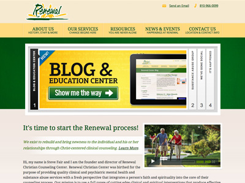
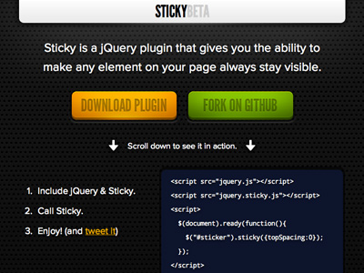

I partnered with a designer friend of mine on this project to create a new online image for this local christian counseling center. Together we created a beatiful website as well as a resource center for those interested in learning about counseling.

Sticky is a custom jQuery plugin I wrote that gives you the ability to make any element on your page always stay visible.